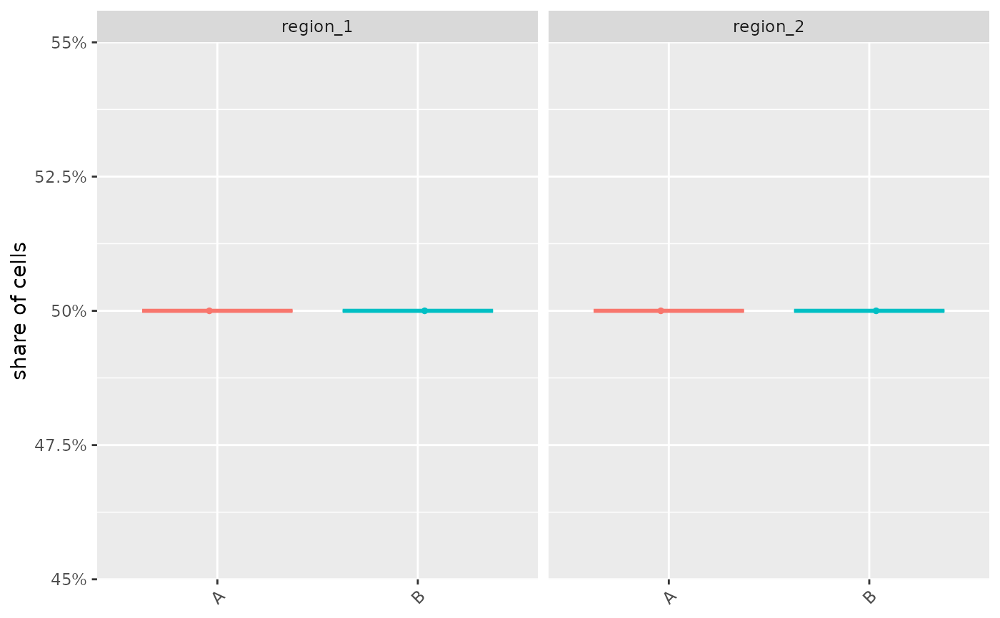

For each image, or each patient when imageID names a patient column, the share of its cells in each
region, drawn as box plots by condition with one panel per region. An image or patient with no cells
in a region has a share of zero.
Arguments
- cells
A SingleCellExperiment, SpatialExperiment or data frame with a region column.
- condition
The column storing the group of each image (or patient).
- region
The column storing the regions.
- imageID
The column identifying the units whose shares are compared: images, or patients to pool the images of each patient.
- regions
The regions to show; all by default.
Examples
set.seed(51773)
x <- round(c(
runif(200), runif(200) + 1, runif(200) + 2, runif(200) + 3,
runif(200) + 3, runif(200) + 2, runif(200) + 1, runif(200)
), 4) * 100
y <- round(c(
runif(200), runif(200) + 1, runif(200) + 2, runif(200) + 3,
runif(200), runif(200) + 1, runif(200) + 2, runif(200) + 3
), 4) * 100
cellType <- factor(paste("c", rep(rep(c(1:2), rep(200, 2)), 4), sep = ""))
imageID <- rep(c("s1", "s2"), c(800, 800))
cells <- data.frame(x, y, cellType, imageID, group = rep(c("A", "B"), c(800, 800)))
cells <- lisaClust(cells, k = 2)
#> Generating local indicators of spatial association.
regionBoxPlot(cells, condition = "group")
